Montréal, entre Europe et Amérique
Découvre Montréal entre le Vieux-Port, le mont Royal, ses quartiers animés et sa scène gastronomique unique.
Vieux-Montréal • Mont Royal • Festivals • Poutine • Fleuve Saint-Laurent
Flâne dans les rues pavées, admire Notre-Dame et profite des terrasses historiques.
Le plus beau panorama sur Montréal, idéal pour une balade ou admirer le coucher du soleil.
Poutine, bagels, smoked meat et cuisine locale rythment la vie montréalaise.
Explore facilement le Plateau, le Mile End, Griffintown ou le centre-ville grâce au métro.
Montréal est la plus grande ville du Québec et l'une des destinations les plus dynamiques d'Amérique du Nord. Entre héritage français, culture nord-américaine et créativité artistique, elle séduit par son identité unique et son atmosphère chaleureuse.
Du Vieux-Montréal au mont Royal, en passant par le Plateau-Mont-Royal, le Mile End ou le centre-ville, chaque quartier possède son propre caractère entre rues historiques, fresques colorées, cafés branchés et espaces verts.
Entre festivals internationaux, gastronomie québécoise, balades le long du fleuve Saint-Laurent, musées, rooftops et vie nocturne animée, Montréal offre une expérience aussi authentique que cosmopolite, quelle que soit la saison.

Au-delà du Vieux-Montréal et du mont Royal, certaines expériences permettent de découvrir une ville plus créative, plus gourmande et souvent plus surprenante que les visites classiques.
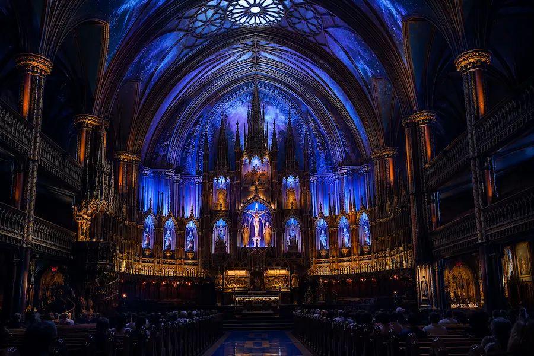
Plonge dans une expérience immersive spectaculaire mêlant projections lumineuses, musique et architecture au cœur de l’une des plus belles basiliques de Montréal.
Découvrir l’expérience →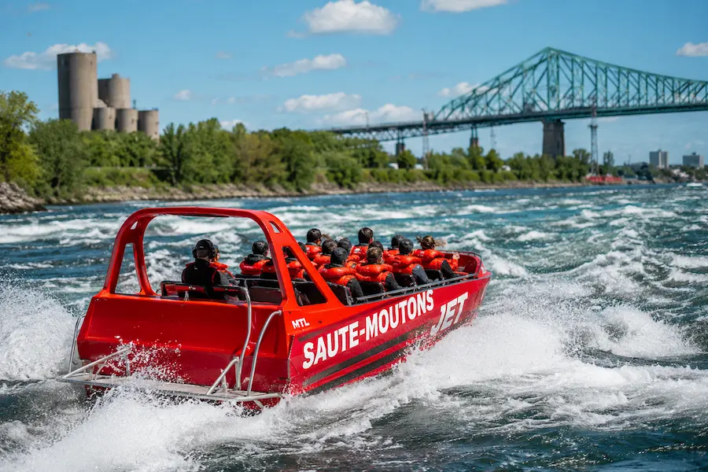
Embarque pour une sortie en jet boat sur le fleuve Saint-Laurent et découvre les célèbres rapides de Lachine lors d’une expérience intense, rafraîchissante et mémorable.
Réserver l’expérience →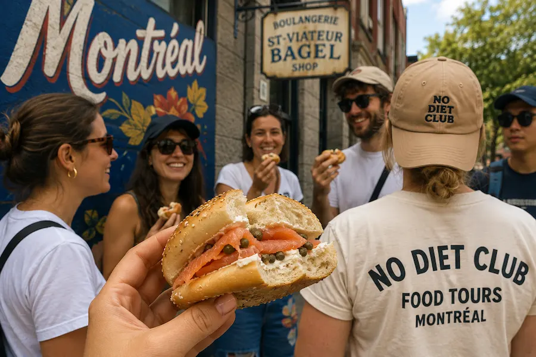
Explore la diversité culinaire montréalaise avec No Diet Club à travers des spécialités locales, des adresses conviviales et des quartiers emblématiques de la ville.
Découvrir la visite →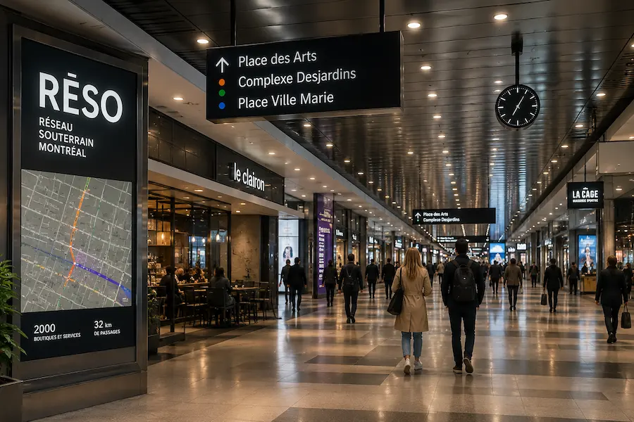
Sous le centre-ville se cache un immense réseau reliant stations de métro, galeries commerciales, hôtels et immeubles. Une particularité incontournable de Montréal, surtout en hiver.
Explorer le RÉSO →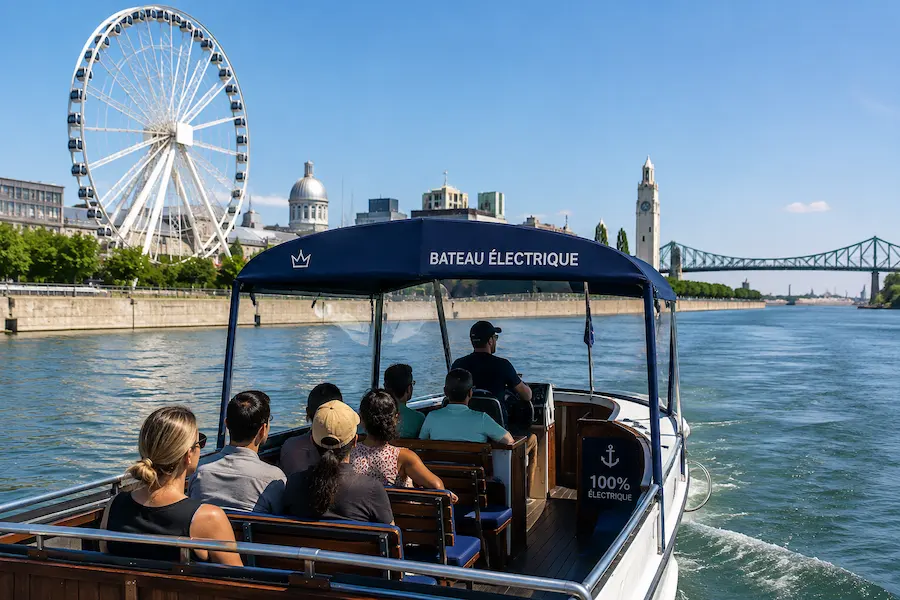
Découvre le Vieux-Port et plusieurs sites emblématiques depuis le fleuve à bord d’un bateau électrique silencieux, confortable et respectueux de l’environnement.
Réserver la croisière →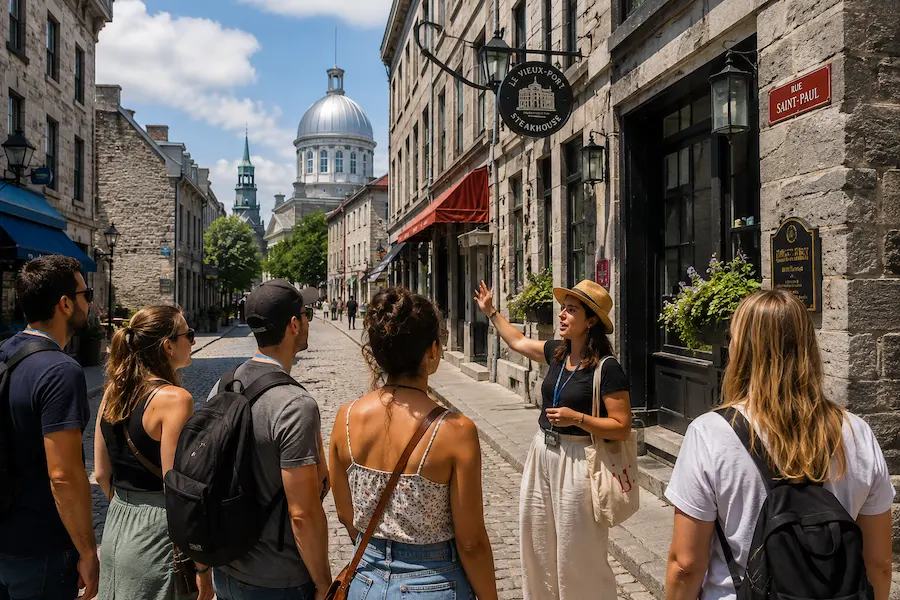
Explore en petit groupe les rues pavées, les bâtiments historiques et les places emblématiques du quartier où l’histoire de Montréal a commencé.
Découvrir le Vieux-Montréal →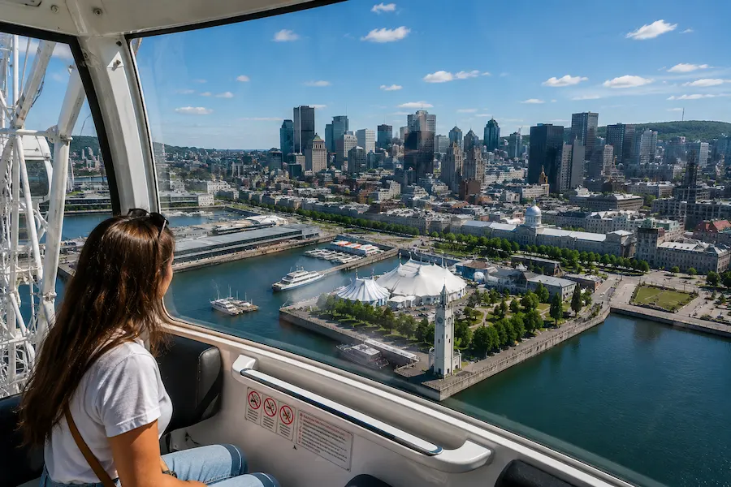
Prends de la hauteur au-dessus du Vieux-Port et profite d’un panorama spectaculaire sur le centre-ville, le fleuve Saint-Laurent et les environs, idéalement au coucher du soleil.
Réserver un billet →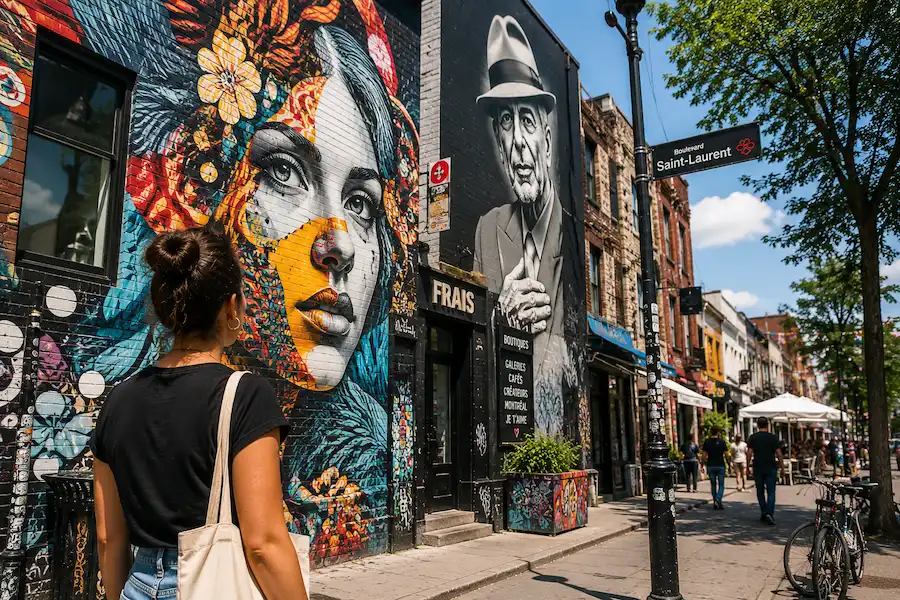
Découvre les fresques monumentales, les artistes locaux et la culture urbaine qui transforment le boulevard Saint-Laurent et les rues du Plateau en galerie à ciel ouvert.
Explorer les murales →Métro, REM, vélo ou transfert privé : découvre les solutions les plus pratiques pour rejoindre les quartiers incontournables et profiter pleinement de ton séjour.
Choisis un pass 24 h, 3 jours ou week-end pour circuler librement en métro, bus et REM. Une solution simple et économique pour multiplier les déplacements.
Voir les pass disponibles →Ce métro léger automatisé relie le centre-ville à plusieurs secteurs du Grand Montréal. Moderne, fluide et agréable, il permet de parcourir la métropole autrement.
Découvrir le réseau →Enfourche un vélo en libre-service et longe le canal de Lachine, le Vieux-Port ou les pistes du Plateau. Une manière agréable et locale de découvrir Montréal.
Louer un vélo →Évite les files d'attente et les correspondances après ton vol grâce à un transfert privé directement jusqu'à ton hôtel dans le centre de Montréal.
Réserver le transfert →Le cœur historique de Montréal. Flâne dans ses rues pavées, découvre la basilique Notre-Dame, le Vieux-Port et profite de nombreuses terrasses dans une ambiance qui rappelle les plus belles villes européennes.
Le quartier idéal pour séjourner au cœur de l'animation. Gratte-ciel, shopping, musées, restaurants et accès direct au métro en font une excellente base pour explorer Montréal.
Le quartier emblématique de Montréal, célèbre pour ses escaliers extérieurs colorés, ses cafés, ses terrasses animées et son atmosphère artistique unique.
Le repaire des artistes et des amateurs de bonne cuisine. Entre fresques murales, cafés indépendants, boutiques originales et célèbres bagels montréalais, l'ambiance est résolument créative.
Ancien quartier industriel devenu l'un des plus modernes de Montréal. Ses restaurants, rooftops, hôtels récents et les promenades le long du canal de Lachine séduisent les voyageurs en quête d'une ambiance contemporaine.
Comparez les hébergements dans les meilleurs quartiers de Montréal.
Smoked meat, bagels cuits au feu de bois, poutine, cafés emblématiques et produits québécois : Montréal possède une identité gastronomique unique, généreuse et profondément liée à ses quartiers.
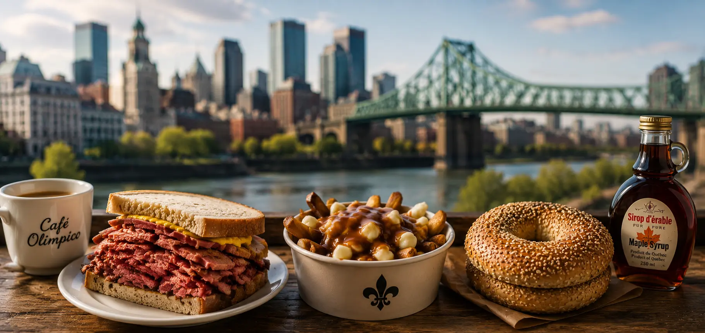
Depuis 1928, cette institution du boulevard Saint-Laurent attire les voyageurs pour son célèbre smoked meat, servi généreusement sur du pain de seigle avec de la moutarde.
Voir le restaurant →Impossible de quitter Montréal sans goûter ses célèbres bagels cuits au feu de bois. Encore chauds, ils font partie des spécialités les plus emblématiques de la ville.
Goûter les bagels montréalais →Ouverte presque à toute heure, cette adresse est devenue une véritable institution pour déguster l'une des poutines les plus célèbres du Québec.
Déguster une poutine →Au cœur du Mile End, ce café italien fait partie des lieux préférés des Montréalais pour savourer un espresso dans une ambiance chaleureuse.
Faire une pause café →Installé dans une ancienne banque, ce café impressionne autant par son architecture spectaculaire que par son atmosphère unique. L'un des plus beaux cafés de Montréal.
Entrer dans ce lieu unique →L'un des plus grands marchés publics d'Amérique du Nord, où producteurs, artisans et spécialités québécoises se dévoilent au fil des saisons.
Parcourir le marché →Explore Montréal autrement grâce à des visites gourmandes accompagnées de guides locaux et goûte aux spécialités qui font la renommée de la ville.
Parcours le quartier le plus créatif de Montréal en dégustant bagels, pâtisseries et spécialités locales dans une ambiance conviviale.
Goûter aux saveurs du Mile End →Rencontre les producteurs locaux, savoure les spécialités québécoises et profite d'un parcours gourmand au cœur de la Petite Italie.
Explorer Jean-Talon et la Petite Italie →Plonge dans l'histoire du sirop d'érable québécois, découvre ses méthodes de fabrication et apprends à reconnaître ses différentes qualités lors d'une dégustation.
Déguster le sirop d'érable →Une visite gourmande moderne qui réunit plusieurs spécialités emblématiques de Montréal à travers une sélection d'adresses appréciées dans la ville.
Participer au food tour →Entre panoramas, espaces verts, musées, quartiers emblématiques et activités culturelles, Montréal offre de nombreuses expériences à vivre, que tu disposes d'un petit budget ou que tu souhaites profiter pleinement de la ville.
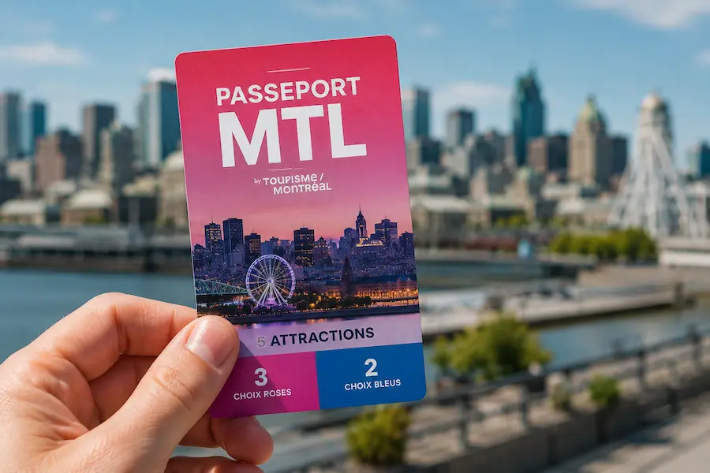
Le Passeport MTL permet d'accéder à cinq attractions parmi une large sélection comprenant le Biodôme, Pointe-à-Callière, la Grande Roue, le Musée des Beaux-Arts, la Biosphère et bien d'autres partenaires tout en réalisant des économies.
Découvrir le Passeport →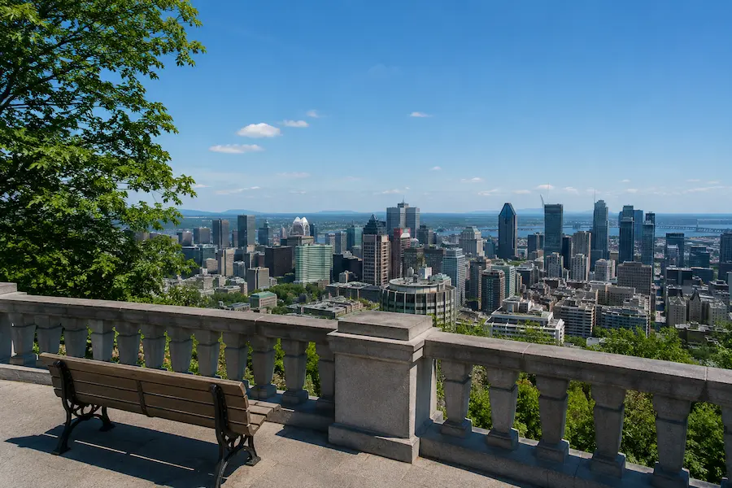
Le belvédère Kondiaronk offre l'un des plus beaux panoramas sur Montréal. Une balade incontournable pour admirer les gratte-ciel, le fleuve Saint-Laurent et les couchers de soleil.
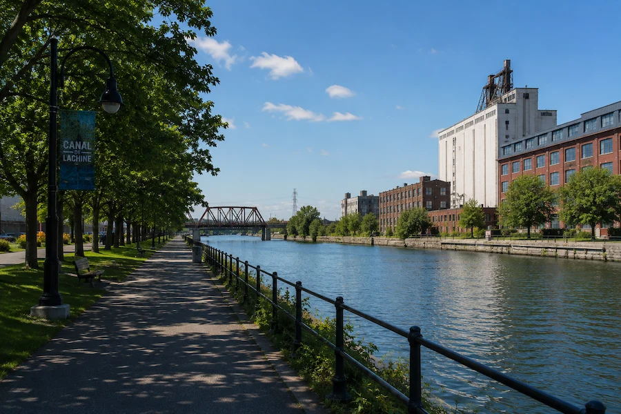
À pied ou à vélo, longe le canal de Lachine entre espaces verts, anciennes usines réhabilitées, terrasses et vues sur l'eau. Une promenade très appréciée des Montréalais.
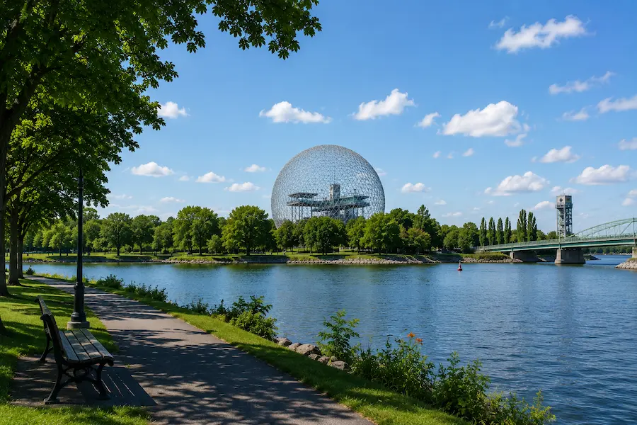
Situé sur deux îles du fleuve Saint-Laurent, ce vaste parc réunit espaces verts, plages, pistes cyclables, œuvres d'art et offre de magnifiques vues sur le centre-ville.
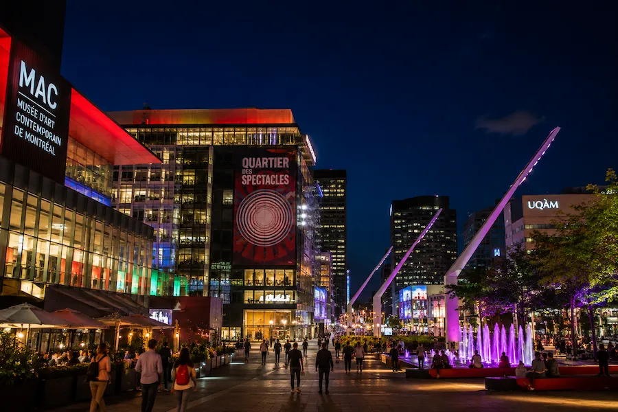
Le cœur culturel de Montréal accueille toute l'année festivals, concerts, expositions et animations lumineuses. Une promenade incontournable, surtout en soirée.
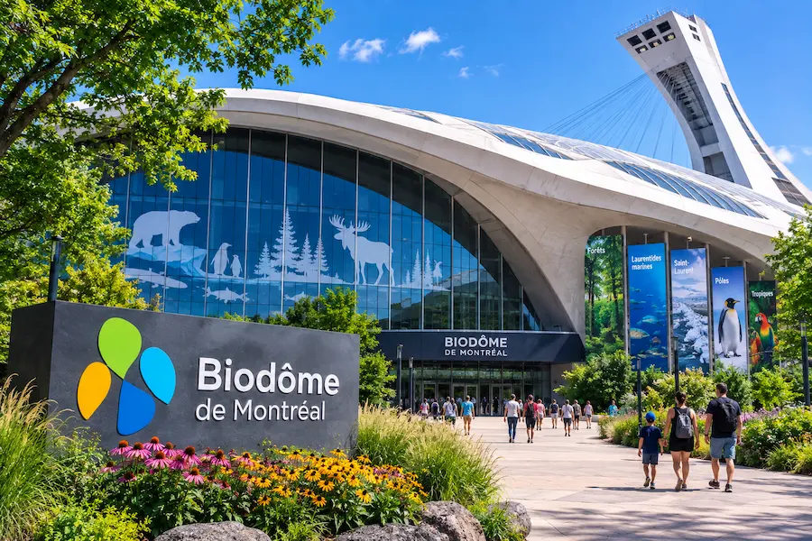
Traverse plusieurs écosystèmes des Amériques et observe manchots, lynx, castors, oiseaux tropicaux et de nombreuses espèces dans l'une des attractions les plus populaires de Montréal.
Réserver votre billet →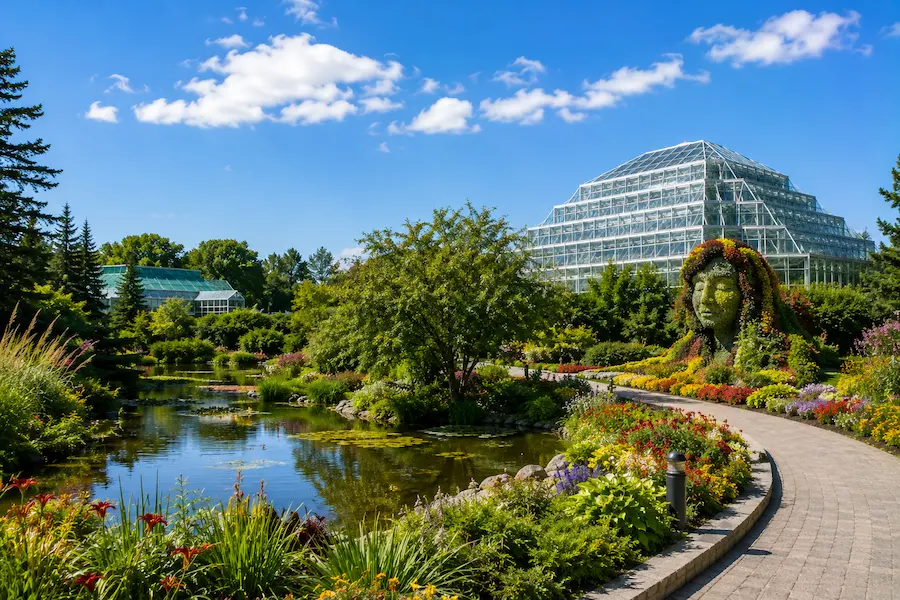
Considéré comme l'un des plus beaux jardins botaniques au monde, il rassemble des milliers d'espèces végétales, des jardins thématiques et de magnifiques serres.
Réserver votre billet →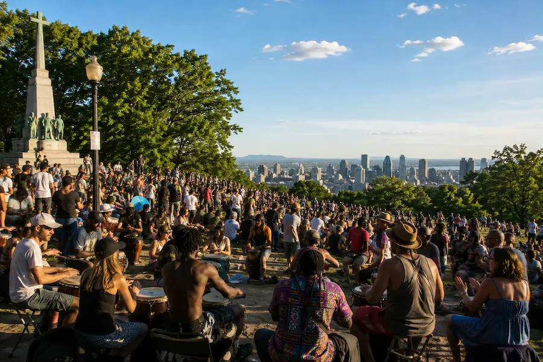
Chaque dimanche en été, des centaines de Montréalais se retrouvent au pied du mont Royal pour partager musique, danse et pique-nique dans une ambiance conviviale.
Montréal vibre au rythme du hockey, du football et de ses grands événements sportifs. Découvrez les rencontres programmées pendant votre séjour et vivez l'ambiance unique des tribunes montréalaises.
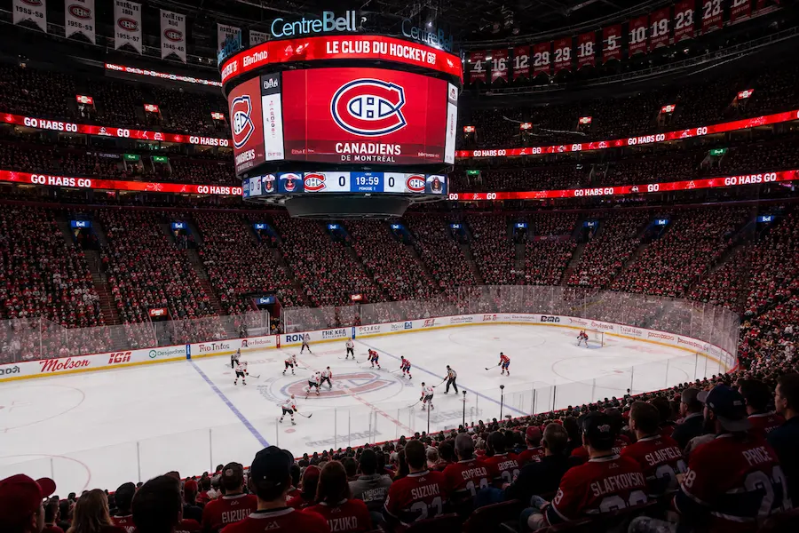
Assistez à un match des Canadiens de Montréal au Centre Bell et découvrez l'une des ambiances les plus emblématiques du hockey nord-américain.
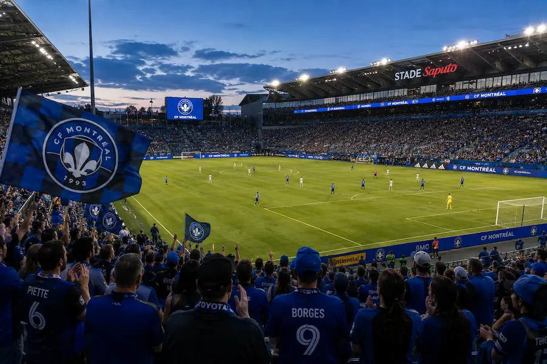
Vivez un match du CF Montréal au Stade Saputo et plongez dans l'atmosphère passionnée de la Major League Soccer.
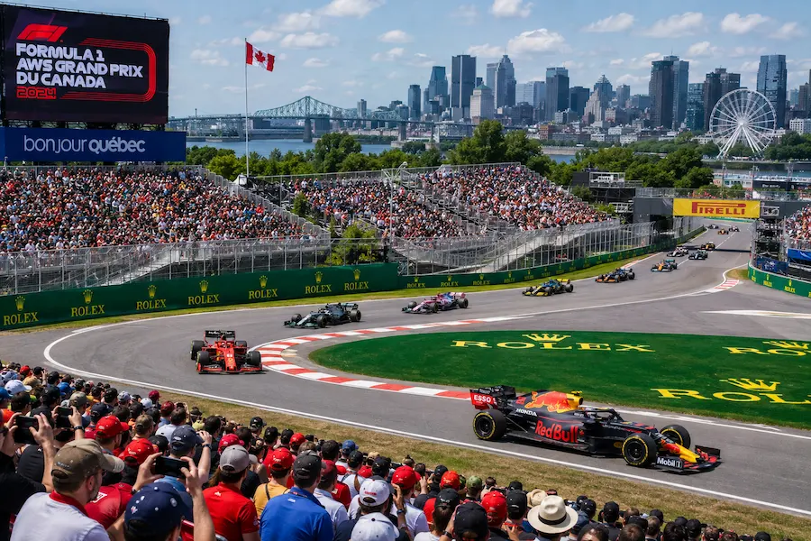
Grand Prix du Canada, tennis international et compétitions majeures rythment l'année à Montréal. Consultez les événements disponibles selon les dates de votre voyage.
Les rencontres et les billets disponibles varient selon la saison et les dates de votre séjour.
Depuis Montréal, partez à la découverte des plus beaux paysages du Québec et de l'est du Canada. Entre villes historiques, montagnes, merveilles naturelles et capitales emblématiques, ces excursions permettent de prolonger votre voyage bien au-delà de Montréal.
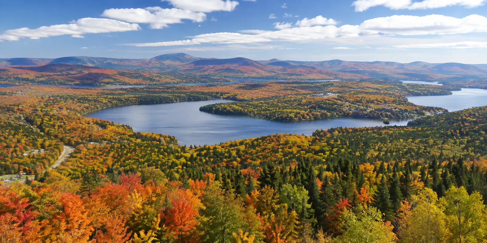
Explore le Vieux-Québec, classé au patrimoine mondial de l'UNESCO, puis admire les impressionnantes chutes Montmorency, plus hautes que les chutes du Niagara. Une excursion incontournable au cœur de l'histoire québécoise.
🏰 Explorer Québec →Partez au cœur de l'un des plus anciens parcs nationaux du Québec. Entre forêts, lacs, montagnes et sentiers panoramiques, cette journée est idéale pour s'immerger dans la nature canadienne.
🥾 Partir en randonnée →Offrez-vous une aventure de deux jours à travers l'Ontario pour admirer les célèbres chutes du Niagara, visiter Toronto et naviguer au cœur de la magnifique région des Mille-Îles.
💦 Vivre cette aventure →Visitez la capitale du Canada le temps d'une journée. Entre la Colline du Parlement, le canal Rideau et ses musées nationaux, Ottawa dévoile une autre facette du pays.
🇨🇦 Visiter Ottawa →Le français est la langue officielle du Québec et la langue principale à Montréal. L'anglais est également très répandu dans les hôtels, les restaurants, les commerces et les principaux sites touristiques.
Le dollar canadien (CAD) est utilisé à Montréal. Les cartes bancaires sont acceptées presque partout, mais quelques dollars en espèces peuvent être utiles pour les petits commerces et les marchés.
Le métro et les bus de la STM permettent de rejoindre facilement le centre-ville, le Vieux-Montréal, le Plateau, le Mile End et les principaux quartiers. La marche et le vélo sont également très agréables pendant les beaux jours.
Quatre à cinq jours permettent de découvrir les principaux quartiers, les musées, le Vieux-Port et le mont Royal. Une semaine offre davantage de temps pour explorer les environs ou rejoindre Québec, les Laurentides ou les Cantons-de-l'Est.
De mai à octobre, les températures sont généralement agréables et de nombreux festivals animent la ville. L'hiver offre une atmosphère totalement différente, avec la neige, les patinoires et les activités saisonnières.
Comptez environ 140 à 320 dollars canadiens par personne et par jour selon l'hébergement choisi, les restaurants fréquentés et les activités réservées.
Quelques erreurs peuvent compliquer un séjour à Montréal, notamment en raison des distances, de la météo changeante et des habitudes locales.
Montréal se découvre facilement, mais le Vieux-Port, le Plateau, le Mile End, le parc Jean-Drapeau et le mont Royal ne sont pas tous situés à proximité immédiate. Regroupe les visites par secteur pour éviter les trajets inutiles.
Les températures peuvent évoluer rapidement, particulièrement au printemps, en automne et en hiver. Prévois des vêtements adaptés et plusieurs couches faciles à retirer.
Les prix affichés dans les commerces et les restaurants n'incluent généralement pas les taxes. Dans les établissements avec service à table, il est également habituel de laisser un pourboire.
La circulation et le stationnement peuvent devenir compliqués dans le centre-ville et le Vieux-Montréal. Le métro, les bus, le vélo et la marche sont souvent plus pratiques.
Les expériences populaires comme AURA, les sorties dans les rapides de Lachine, les visites gastronomiques et certains événements peuvent afficher complet pendant les week-ends et les périodes touristiques.
Le quartier historique est incontournable, mais Montréal se découvre aussi à travers le Plateau, le Mile End, le boulevard Saint-Laurent, le marché Jean-Talon et les nombreux quartiers résidentiels.
Quatre jours permettent de découvrir les principaux quartiers et attractions. Cinq à sept jours sont préférables pour visiter la ville à un rythme plus tranquille et prévoir une excursion dans les environs.
Le centre-ville et le Vieux-Montréal sont particulièrement pratiques pour une première visite. Le Plateau-Mont-Royal et le Mile End conviennent davantage aux voyageurs recherchant une ambiance locale, créative et animée.
Oui. L'anglais est largement compris dans les zones touristiques, les hôtels, les restaurants et les commerces. Utiliser quelques mots de français reste néanmoins apprécié.
Oui. Le réseau de métro et de bus dessert efficacement les principaux quartiers. Le centre-ville, le Vieux-Montréal, le Plateau et le Mile End peuvent également être explorés à pied ou à vélo.
La poutine, les bagels montréalais, la viande fumée, les produits à base de sirop d'érable et les nombreuses cuisines internationales font partie des expériences culinaires incontournables.
Oui. La ville offre une atmosphère particulière avec la neige, les patinoires, les illuminations et les activités hivernales. Il faut toutefois prévoir des vêtements très chauds et des chaussures adaptées.